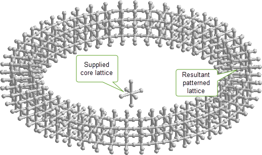
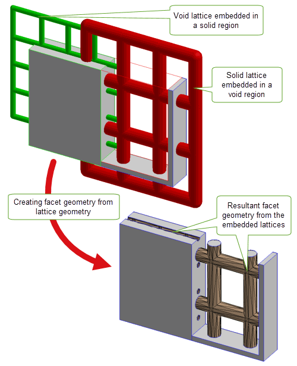
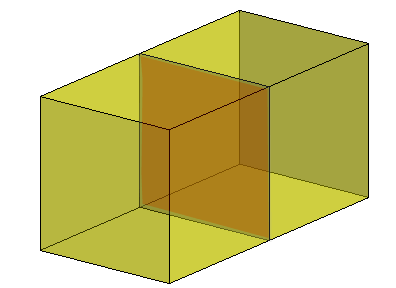
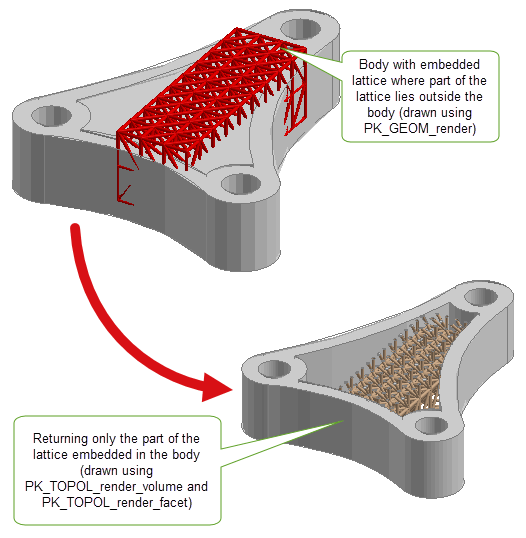
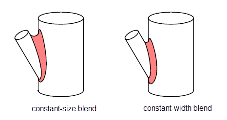

| |
What’s New in Parasolid V36.0 |
| Chapters |
This document describes functional enhancements and interface changes that have been added to Parasolid V36.0 and gives information on any other matters that are specific to this release.
This section describes improvements that have been made to Parasolid’s support for representing lattices in Parasolid V36.0. Full details on Parasolid lattices can be found in Chapter 20, “Lattice Geometry”, of the Parasolid Functional Description.
|
Note: A Convergent Modelling license is required for all operations on lattices. |
In V36.0 lattices can be embedded in a region as boundary geometry. This functionality can provide additional context and information about the construction of the associated body. For example, a lattice with a solid interior in a void region could be used as a lightweight but strong structure.
Parasolid also provides additional support in allowing you to enquire if a given lattice is embedded in a region, and if a given region has an embedded lattice.
Figure 1-1 A lattice embedded in the internal void of a hollowed cube
For more information see Section 20.10, “Lattices in regions” in the Parasolid Functional Description.
In V36.0, Parasolid has extended its support for patterned lattices by enabling the creation of a patterned lattice based on a cylindrical pattern rather than a rectilinear one. This is useful where you wish to pattern over periodic surfaces.
In addition, the errors returned from PK_LATTICE_make_patterned and PK_BODY_make_patterned have been refined to provide more guidance on the nature of the problems with the inputs.
Figure 1-2 Creating a patterned lattice using cylindrical patterns
For more information, see Section 20.6.2.2, “Producing an axial pattern” in the Parasolid Functional Description.
|
PK_LATTICE_make_patterned_o_t, PK_BODY_make_patterned: new value pk_pattern_axial_c PK_pattern_form_t: new union member PK_pattern_axial_o_t |
In Parasolid V36.0, you can enlarge a supplied lattice. The resultant enlarged lattice will be trimmed to fit inside the size box or a user supplied trimming box.
None, but PK_GEOM_enlarge now supports lattices.
Parasolid V36.0 allows you to convert an array of regions or a single input body containing lattice geometry, into a collection of non-lattice regions bounded by mesh faces. This functionality can be useful if, for example, you want to export the input body to a format that does not support lattices or you want to use other functionality that supports meshes but does not support lattice geometry.
Figure 1-3 Creating facet geometry by imprinting the frames associated with a region
For more information, see Section 20.10.4, “Imprinting embedded lattices” in the Parasolid Functional Description.
In V36.0, Parasolid can return whether a partition contains lattice geometry. You can optionally return parts that contain lattice geometry or orphan lattices.
In Parasolid V36.0 bodies containing lattice geometry can be transformed if the transform is rigid or uniform scale.
None, but changes also affect PK_BODY_enlarge and PK_BODY_transform_2
This section describes improvements that have been made to Parasolid’s cellular body support functionality for Parasolid V36.0. Further details can be found in Volume 3: Basic Concepts.
A cellular body is a manifold or general body that has one or more solid regions potentially separated by partition faces. As of V36.0, Parasolid now allows you to query if a given body is a cellular body.
For more information, Section 15.7.1, “Cellular bodies” in the Parasolid Functional Description.
Parasolid has enhanced its support of cellular bodies by allowing your application to choose to treat cellular bodies either as general bodies or as manifold bodies during a Parasolid session.
When treating a cellular body as manifold, all geometric and many topological enquiries will work and return results that are consistent with the manifold view of the model. If your application supplies an entity that is not consistent with this manifold view, PK_ERROR_hidden_by_guise will be returned.
For more information on cellular guises, see Section 15.10, “Treating cellular bodies as manifold bodies” in the Parasolid Functional Description.
|
PK_SESSION_ask_cellular_guise, PK_SESSION_set_cellular_guise |
Changes span across many of the Parasolid APIs, too numerous to mention.
Parasolid V36.0 has improved its support for cellular bodies in the following areas:
This section describes the improvements that have been made to Parasolid’s support for models of different scales in Parasolid V36.0.
Figure 1-5 Real world example of a multi-scale scenario
Parasolid supports models whose parts are of different scales (enquiry functions such as rendering, faceting, boxing and measurement). It also allows geometry and parts created at a larger scale to be scaled and trimmed so they can interact with entities at a smaller scale. In V36.0 a new chapter that provides information on what distant and multi-scale modelling are, and how Parasolid uses these distinct but complementary mechanisms to enable your application to work with large scale models.
For more information see, Chapter 23, “Distant and Multi-scale Modelling” in the Parasolid Functional Description.
Parasolid V35.0 provided initial support for models whose parts are of different scales (enquiry functions such as rendering, faceting, boxing and measurement). It also allows geometry and parts created at a larger scale to be scaled and trimmed so they can interact with entities at a smaller scale.
In V36.0 support for collections of parts of different scales has been added to mass properties and hidden line rendering.
For more information, see Section 28.1.3, “Summary of options” in the Parasolid Functional Description.
|
PK_TOPOL_eval_mass_props_o_t new options: |
Options to scale the output of operations involving models of different scales have also been added to mass properties and hidden line rendering.
For more information, see Section 28.1.3, “Summary of options” in the Parasolid Functional Description.
|
PK_TOPOL_eval_mass_props_o_t new option: |
This section describes improvements that have been made to Parasolid’s faceting and rendering functionality for Parasolid V36.0. Full details on Parasolid’s faceting and rendering functionality are given in Volume 15: Graphics Support, of the Parasolid Functional Description
In V36.0 Parasolid allows you to visualise lattices embedded in a body by outputting a collection of display primitives representing the lattice geometry along with a bounding set of facets.
Figure 1-6 Rendering only the part of the lattice embedded in the body
For more information, see Section 20.10.4, “Imprinting embedded lattices” in the Parasolid Functional Description.
This section describes improvements that have been made to Parasolid’s modelling support functionality for Parasolid V36.0. Further details can be found in Volume 3: Basic Concepts.
In V36.0 you can now enlarge general bodies (including cellular) as well as wireframe bodies and minimal bodies.
None, but changes effect PK_BODY_enlarge.
This section describes improvements that have been made to Parasolid’s model interrogation functionality for Parasolid V36.0. Full details on Parasolid’s interrogation functionality are given in Volume 4: Model Interrogation, of the Parasolid Functional Description.
In V36.0, you can now calculate distances between an array of vectors and a single topology. This can offer significant performance improvements when working with large numbers of vector positions. Previously, you could only supply a single geometry with multiple vectors.
For more information, see Section 29.2.1, “Calculating the distance between transformed entity arrays”, in the Parasolid Functional Description.
None, but changes effect PK_ENTITY_range_vector.
This section describes improvements that have been made to Parasolid’s blending functionality for Parasolid V36.0. Full details on Parasolid’s blending functionality are given in Volume 11: Blending, of the Parasolid Functional Description.
In V36.0, you can set constant-width edge blends on a single chain of edges.
Figure 1-7 Example showing the difference between a constant-size blend and a constant-width blend
For more information, see Section 76.2.4, “Options for constant-width blends”, in the Parasolid Functional Description.
|
PK_EDGE_set_blend_chain: new values PK_blend_size_width_c, PK_blend_size_ratio_c |
This section describes improvements that have been made to Parasolid’s application support functionality for Parasolid V36.0. Full details on Parasolid’s support for application development are given in Volume 2 Application Development Essentials and Volume 14 Application Support of the Parasolid Functional Description.
In Parasolid V36.0, you can choose to receive a partition as locked to the calling thread, ensuring it is private to that thread and can benefit from the performance of locally exclusive Parasolid calls. Previously, your application would have to make multiple calls to achieve this behaviour.
For more information, see Section 101.5.2, “Locking a received partition” in the Parasolid Functional Description.
|
PK_PARTITION_receive: new option |
This section lists the new system attributes that have been added to Parasolid V36.0.
The functionality below was announced in previous versions of Parasolid but was blocked at the time of release. The following have now been unblocked.
In addition to documentation covering the changes and additions to Parasolid functionality described elsewhere in this chapter, the following changes have been made to the Parasolid documentation suite:
This section describes improvements that have been made to Parasolid’s support applications for Parasolid V36.0.
The following applications now ship as a Visual Studio 2022 solution and now build as 64-bit application by default:
In addition, the C++ Example Application for Windows has been updated to use the following functions:
This section describes changes to the platforms on which Parasolid ships that are relevant to the V36.0 release. For full details of changes to platforms, please see the customer letter accompanying the Parasolid V36.0 release.
This section describes our current plans for Parasolid V36.0. For more details, please see the customer letter accompanying the Parasolid V36.0 release.
| Chapters |